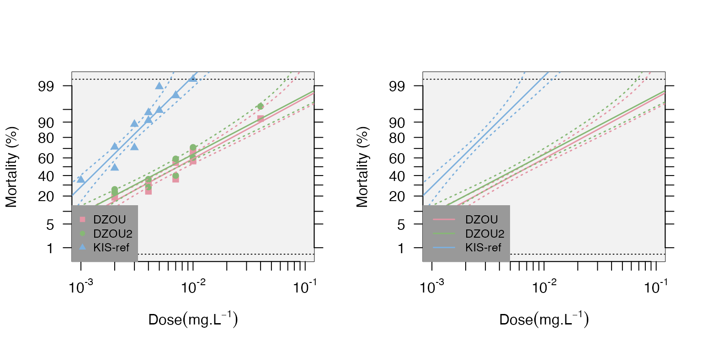
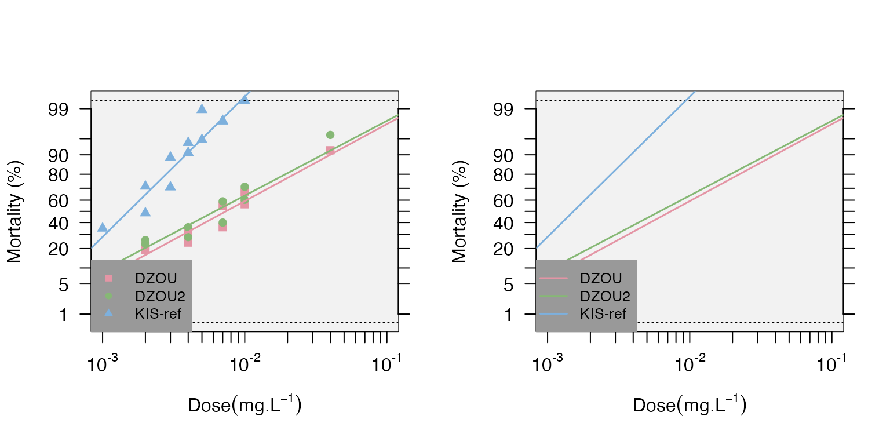

BioRssay.Rmd
library(BioRssay)Piyal Karunarathne, Nicolas Pocquet, Pascal Milesi, and Pierrick Labbé
This package is designed to analyze mortality data from bioassays of one or several strains/lines/populations. As of now, the functions in the package allow adjusting for mortality in the controls with Abott’s correction. For each strain, functions are available to generate a mortality-dose regression using a generalized linear model (which take over-dispersion into account and allow mortality of 0 or 1), and plot the regressions with or without the desired confidence interval (e.g. 95%).
The package also provides functions to test the linearity of the log-dose response using a chi-square test between model predictions and observed data (significant deviations from linearity may reflect mixed populations for example).
The package also allows computing the lethal dose for 50% and 95% of the populations (LD50 and LD95 respectively), with their 95% confidence intervals (CI), following Johnson et al. 2013 approach, which allows taking the heterogeneity of the data into account (Finney 1971) to calculate the CI (i.e. a larger heterogeneity will increase the CI).
The methods implemented here use a likelihood ratio test (LRT) to test for differences in resistance levels among different strains. Finally, resistance ratios (RR) at LD50 and LD95, i.e. the ratios between a given strain and the strain with the lower LD50 and LD95, respectively (usually it is the susceptible reference), with their 95% confidence intervals, are calculated according to Robertson and Preisler (1992).
BioRssay can import data in any format that is compatible with base R data import functions (e.g. read.table, read.csv). However, for the functions in BioRssay to work, the data must have at least the following columns (other columns won’t be used, but are no hindrance): * strain: a column containing the strains tested * dose: dosage tested on each strain/sample. controls should be entered as 0 * total: total number of samples tested * dead: number of dead samples See the examples below.
Example 1
data(bioassay)
head(bioassay$assay2)
#> insecticide strain dose total dead replicate date
#> 1 temephos KIS-ref 0.000 100 1 1 26/01/11
#> 2 temephos KIS-ref 0.002 97 47 1 26/01/11
#> 3 temephos KIS-ref 0.003 96 68 1 26/01/11
#> 4 temephos KIS-ref 0.004 98 89 1 26/01/11
#> 5 temephos KIS-ref 0.005 95 90 1 26/01/11
#> 6 temephos KIS-ref 0.007 99 97 1 26/01/11Also download the test data at https://github.com/milesilab/DATA/blob/main/BioAssays/Test.BioRssay.txt and find more example data sets at https://github.com/milesilab/DATA/blob/main/BioAssays
Example 2
file <- paste0(path.package("BioRssay"), "/Test.BioRssay.txt")
test<-read.table(file,header=TRUE)
head(test)
#> insecticide strain dose total dead
#> 1 bendiocarb Kisumu 0.00 25 0
#> 2 bendiocarb Kisumu 0.00 25 0
#> 3 bendiocarb Kisumu 0.00 25 0
#> 4 bendiocarb Kisumu 0.00 25 0
#> 5 bendiocarb Kisumu 0.01 25 0
#> 6 bendiocarb Kisumu 0.01 25 0NOTE: It is also possible to include a reference strain/population with the suffix “ref” in the strain column, or the reference strain can be specified later in the function “resist.ratio” to obtain the resistance ratios for each strain (see below).
The workflow is only succinctly described here, for more information on the functions and their options, see individual one in the reference index.
Let’s have a quick look at the data again.
assays<-bioassay
exm1<-assays$assay2
head(exm1)
#> insecticide strain dose total dead replicate date
#> 1 temephos KIS-ref 0.000 100 1 1 26/01/11
#> 2 temephos KIS-ref 0.002 97 47 1 26/01/11
#> 3 temephos KIS-ref 0.003 96 68 1 26/01/11
#> 4 temephos KIS-ref 0.004 98 89 1 26/01/11
#> 5 temephos KIS-ref 0.005 95 90 1 26/01/11
#> 6 temephos KIS-ref 0.007 99 97 1 26/01/11
unique(as.character(exm1$strain))
#> [1] "KIS-ref" "DZOU" "DZOU2"This example contains the mortality data of three strains (KIS, DZOU, and KIS-ref); KIS is used as the reference, as indicated by the “ref” suffix.
The first step is to check whether the controls have a non-negligible mortality, in which case a correction should be applied to the data, before probit transformation. This is easily achieved with the function “probit.trans”.
dataT<-probit.trans(exm1) #additionally an acceptable threshold for controls' mortality can be set as desired with "conf="; default is 0.05.
dataT$convrg
#> NULL
head(dataT$tr.data)
#> insecticide strain dose total dead replicate date mort probmort
#> 2 temephos KIS-ref 0.002 97 47 1 26/01/11 0.4845361 -0.0387720
#> 3 temephos KIS-ref 0.003 96 68 1 26/01/11 0.7083333 0.5485223
#> 4 temephos KIS-ref 0.004 98 89 1 26/01/11 0.9081633 1.3295291
#> 5 temephos KIS-ref 0.005 95 90 1 26/01/11 0.9473684 1.6198563
#> 6 temephos KIS-ref 0.007 99 97 1 26/01/11 0.9797980 2.0495943
#> 7 temephos KIS-ref 0.010 99 99 1 26/01/11 0.9940000 2.5121443The output of probit.trans is a list of which the first element (convrg) contains the results of Abott’s correction and convergence values.
However, since the mortality in the controls (dose=0) is below 5% (conf=0.05) in the present example, data$convrg is NULL and thus no correction is applied to the data . The second element of the list dataT is the probid transformed data with two additional columns: mort, the observed mortalities, and probmort, the observed probit-transformed mortalities. This data frame is what we’ll use in the next steps of the analysis.
If you set the threshold to conf=0.01 with example 1, you can assess the effects of the Abbot’s correction: all mortalities are slightly reduced to take the base control mortality into account.
The second step is to compute the lethal dose values (50% and 95%, LD50 and LD95 respectively) and the corresponding resistance ratios. The function “resist.ratio” allows you to do just that. If no reference strain has been specified in the data file (using the suffix “ref” as mentioned above), it can be specified in “ref.strain=”. Otherwise, the strain with the lowest LD50 will be considered as such. By default, the LDs’ 95% confidence intervals are computed (the min and max values are reported); you can adjust this using “conf.level=”.
data<-dataT$tr.data #probid transformed data
RR<-resist.ratio(data)
RR
#> LD25 LD25min LD25max LD25var LD50 LD50min LD50max LD50var LD95
#> DZOU 0.0030 0.0024 0.0037 1 0.0074 0.0061 0.0091 1 0.0645
#> DZOU2 0.0025 0.0018 0.0031 1 0.0062 0.0050 0.0077 1 0.0576
#> KIS-ref 0.0009 0.0006 0.0012 1 0.0015 0.0012 0.0018 1 0.0050
#> LD95min LD95max LD95var Slope SlopeSE Intercept InterceptSE h g
#> DZOU 0.0410 0.1252 1.03 1.75 0.1537 3.72 0.3579 1.91 0.0397
#> DZOU2 0.0354 0.1214 1.02 1.69 0.1657 3.74 0.3907 2.33 0.0490
#> KIS-ref 0.0041 0.0067 1.00 3.17 0.3812 8.95 0.9849 3.26 0.0716
#> Chi(p) rr25 rr25max rr25min rr50 rr50max rr50min rr95 rr95max rr95min
#> DZOU 0.3606 3.24 1931 0.0055 4.84 2877 0.0082 13 7990 0.0207
#> DZOU2 0.3568 2.64 1572 0.0044 4.05 2405 0.0068 11 7090 0.0186
#> KIS-ref 0.5715 1.00 597 0.0017 1.00 594 0.0017 1 596 0.0017Note that we did not specify the reference strain here as it is already labeled in the data
For each strain, you have first the LD50 and LD95 and their upper and lower limits (defaults is 95% CI), then the slope and intercept of the regression (with their standard error), the heterogeneity (h) and the g factor (“With almost all good sets of data, g will be substantially smaller than 1.0 and seldom greater than 0.4.” Finney, 1971).
The result of the chi test (Chi(p)) is then indicated to judge whether the data follow a linear regression: here all the p-values are over 0.05 so the fits are acceptable. Finally the resistance ratios are indicated for LD50 and LD95 (RR50 and RR95), as well as their upper and lower limits.
The third step, when analysing more than one strain, is now to test for difference in dose-mortality responses between strains using the “model.signif” function.
model.signif(dataT$tr.data)
#> $model
#> strain1 strain2 model.pval deviance df bonferroni
#> 1 DZOU DZOU2 0.264023226942502 -5.52847606655654 -2 sig
#> 2 DZOU KIS-ref 8.3588934657195e-61 -714.373451385791 -2 sig
#> 3 DZOU2 KIS-ref 3.15241148845391e-48 -603.931258358858 -2 non-sigAs there are 3 strains, the function first tests whether all strains are similar (i.e. equivalent to 1 strain) or not (3 strains vs 1 strain), using a likelihood ratio test. Here, the test is highly significant, some strains are thus different in terms of resistance.
Pairwise tests are then performed and reported below. Here, the KIS strain is different from DZOU and from DZOU2 strains (model.pval <0.05). DZOU and DZOU2 are not different (model.pval >0.05). The bonferroni column indicates whether the p-values <0.05 remain significant (sig vs non-sig) after correction for multiple testing.
Data Visualization The data and the regression can be plotted with confidence levels using the “mort.plot” function. It is also possible to take the validity of the linearity test into account for the plots using the “test.validity=” option. The probit-transformed mortalities [probit.trans() function] are plotted as a function of the log10 of the doses.
#strains<-levels(data$strain)
par(mfrow=c(1,2)) # set plot rows
mort.plot(data,plot.conf=FALSE,test.validity=FALSE) # plot without confidence intervals and test of validity of the model
mort.plot(data,plot.conf=FALSE,test.validity=FALSE,pch=NA) # plot only the regression lines
# same plots with confidence level
par(mfrow=c(1,2))
mort.plot(data,plot.conf=TRUE,test.validity=FALSE)
mort.plot(data,plot.conf=TRUE,test.validity=FALSE,pch=NA) It is also possible to plot different confidence intervals with the “conf.level=” option (the default is 0.95). It is possible to plot only a subset of strains using the “strains=” option to list the desired strains; if not provided, all the strains will be plotted.
Note that the plots can be generated directly from the “resist.ratio” function using the “plot=T” option.
We follow the same workflow (using the plot option in “resist.ratio”). However, there are more than one insecticide tested in this experiment. Therefore, we need to subset the data for each insecticide, and carry out the analysis as before.
head(test)
#> insecticide strain dose total dead
#> 1 bendiocarb Kisumu 0.00 25 0
#> 2 bendiocarb Kisumu 0.00 25 0
#> 3 bendiocarb Kisumu 0.00 25 0
#> 4 bendiocarb Kisumu 0.00 25 0
#> 5 bendiocarb Kisumu 0.01 25 0
#> 6 bendiocarb Kisumu 0.01 25 0
unique(test$insecticide)
#> [1] "bendiocarb" "chlorpyrifos-metyl" "permethrin"
bend<-test[test$insecticide=="bendiocarb",]
head(bend)
#> insecticide strain dose total dead
#> 1 bendiocarb Kisumu 0.00 25 0
#> 2 bendiocarb Kisumu 0.00 25 0
#> 3 bendiocarb Kisumu 0.00 25 0
#> 4 bendiocarb Kisumu 0.00 25 0
#> 5 bendiocarb Kisumu 0.01 25 0
#> 6 bendiocarb Kisumu 0.01 25 0We will use a subset of the data for the insecticide “bendiocarb” only.
dataT.b<-probit.trans(bend)
data.b<-dataT.b$tr.data
RR.b<-resist.ratio(data.b,plot = T,ref.strain = "Kisumu",plot.conf = T, test.validity = T)
head(RR.b)
#> LD25 LD25min LD25max LD25var LD50 LD50min LD50max LD50var
#> Acerkis 43.0000 40.0000 47.0000 1.01 57.0000 53.0000 60.000 1.00
#> AgRR5 66.0000 61.0000 70.0000 1.01 79.0000 75.0000 83.000 1.00
#> Kisumu 0.2228 0.2069 0.2365 1.07 0.2726 0.2587 0.286 1.05
#> LD95 LD95min LD95max LD95var Slope SlopeSE Intercept InterceptSE
#> Acerkis 108.0000 100.000 117.0000 1.01 5.88 0.3656 -10.2992 0.6734
#> AgRR5 123.0000 116.000 134.0000 1.01 8.52 0.6962 -16.1686 1.3600
#> Kisumu 0.4461 0.416 0.4879 1.39 7.69 0.6055 4.3400 0.3282
#> h g Chi(p) rr25 rr25max rr25min rr50 rr50max rr50min rr95
#> Acerkis 1.00 0.0149 0.9995 195 130322 0.2910 207 134157 0.3202 241
#> AgRR5 1.61 0.0279 0.9609 296 197599 0.4431 290 187667 0.4486 277
#> Kisumu 1.00 0.0238 0.0000 1 736 0.0014 1 699 0.0014 1
#> rr95max rr95min
#> Acerkis 262409 0.2218
#> AgRR5 300907 0.2543
#> Kisumu 1876 0.0005Note that we have enabled the arguments “plot=” with “plot.conf=” and “test.validity=”. When the log-dose-response is not linear for a strain (Chi-square p-value < 0.05), it will be plotted without forcing linearity as for ,“Kisumu” strain in this example.
#To then test the difference in dose-mortality response between the strains
t.models<-model.signif(data.b)
t.models
#> $model
#> strain1 strain2 model.pval deviance df bonferroni
#> 1 Acerkis AgRR5 9.81944629906017e-18 -93.3705086548187 -2 sig
#> 2 Acerkis Kisumu 4.09605796743876e-78 -1220.98742604214 -2 sig
#> 3 AgRR5 Kisumu 3.52611879574658e-84 -1433.09904360371 -2 sigNote that as one of the strains failed the linearity test, the validity of the dose-mortality response test is, at best, highly questionable. We do not recommend it.
These steps can be repeated for the different insecticides, either one by one or or in a loop (e.g. “for” loop function).
Finney DJ(1971). Probitanalysis. Cambridge:Cambridge UniversityPress. 350p.
HommelG(1988). A stage wise rejective multiple test procedure based on a modified Bonferroni test. Biometrika 75, 383-6.
Johnson RM, Dahlgren L, Siegfried BD,EllisMD(2013). Acaricide,fungicide and druginteractions in honeybees (Apis mellifera). PLoSONE8(1): e54092.
Robertson, J. L., and H.K. Preisler.1992. Pesticide bioassays with arthropods. CRC, Boca Raton, FL.